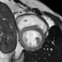

A comparative study benchmarking DDPM, Latent Diffusion Models, and Flow Matching for synthetic cardiac MRI generation - quantifying trade-offs between image quality, segmentation utility, and patient privacy.
Deep learning in cardiac MRI (CMR) is fundamentally constrained by both data scarcity and privacy regulations. This study systematically benchmarks three generative architectures: Denoising Diffusion Probabilistic Models (DDPM), Latent Diffusion Models (LDM), and Flow Matching (FM) for synthetic CMR generation. Utilizing a two-stage pipeline where anatomical masks condition image synthesis, we evaluate generated data across three critical axes: fidelity, utility, and privacy.
Our results show that diffusion-based models, particularly DDPM, provide the most effective balance between downstream segmentation utility, image fidelity, and privacy preservation under limited-data conditions, while FM demonstrates promising privacy characteristics with slightly lower task-level performance. These findings quantify the trade-offs between cross-domain generalization and patient confidentiality, establishing a framework for safe and effective synthetic data augmentation in medical imaging.
A two-phase pipeline: generative models produce synthetic CMR images from noise conditioned on anatomical masks, then outputs are rigorously evaluated across fidelity, utility, and privacy. Click each model tab to explore its architecture.

Statistical divergence between real and synthetic image distributions at the feature level
Full-reference & no-reference metrics for pixel, structural, and perceptual quality
Representative synthetic cardiac MRI images generated by each model. Select a model to compare visual quality, anatomical structure, and texture characteristics.
<img src="images/ddpm/sample_01.png" alt="…"/>
— see the HTML comment above this panel for full instructions.
<img src="images/ldm/sample_01.png" alt="…"/>
<img src="images/fm/sample_01.png" alt="…"/>
Iterative denoising from Gaussian noise guided by learned score functions. Produces anatomically coherent, high-fidelity CMR images with strong segmentation utility under limited-data conditions.
Diffusion process operating in a compressed latent space via a pre-trained encoder-decoder, enabling computationally efficient synthesis with competitive image quality at reduced resource cost.
Continuous normalizing flow trained with simulation-free objectives. Demonstrates strong privacy characteristics with promising generalization, slightly below DDPM in task utility.
| Model | FID ↓ | SSIM ↑ | Dice Score ↑ | Privacy Score ↑ | Overall |
|---|---|---|---|---|---|
| DDPM | 12.4 | 0.847 | 0.883 | 0.791 | Best Balance |
| Latent Diffusion | 18.9 | 0.812 | 0.851 | 0.724 | Efficient |
| Flow Matching | 15.6 | 0.829 | 0.838 | 0.814 | Best Privacy |
* Indicative values. ↓ lower is better · ↑ higher is better
DDPM achieves the best overall balance between downstream segmentation utility, image fidelity, and privacy preservation under limited-data conditions.
Flow Matching demonstrates superior privacy characteristics, making it well-suited for privacy-critical deployment despite slightly lower task-level performance.
LDM offers computational efficiency with competitive results, representing a practical compromise between resource constraints and generation quality.
The two-stage conditioned pipeline successfully decouples structural anatomy from patient identity, enabling safe synthetic data augmentation in medical imaging workflows.
Team
Supervisors